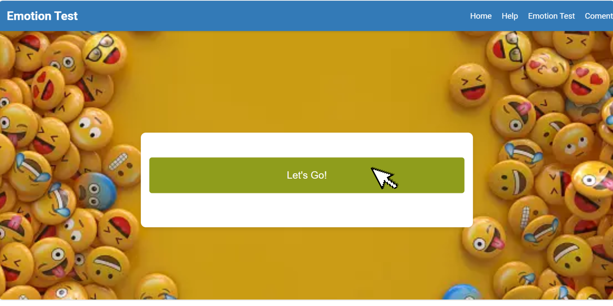
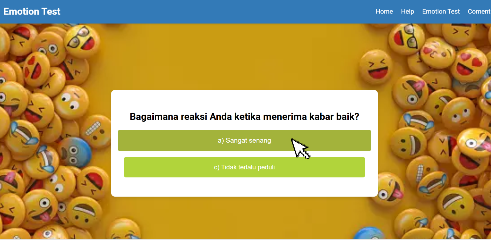
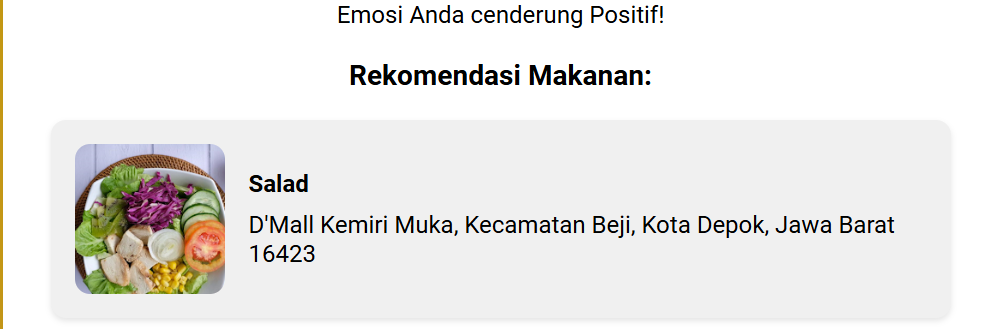

Help !!
Adanya Home
Penjelasan Tentang aplikasi ini adalah untuk menentukan hasil emotion apakah positif atau negatif dan bisa langsung muncul beberapa rekomendasi makanan sesuai emotionnya.
Pertama
Klik Tombol mulai test dibawah ini:
Kedua
Muncul tampilan beberapa pertanyaan. Klik salah satu sesuai kondisi yang anda alami seperti dibawah ini:
ketiga
Setelah mengerjakan beberapa pertanyaan, muncul output akhir yaitu menentukan emotion apa yang sesuai dengan kondisi saat ini:
keempat
Setelah muncul output penentuan emotion positif/negatif, tampak beberapa rekomendasi makanan serta alamat yang diberikan untuk merubah emotion sesuai kondisi saat ini:
Terima kasih telah memilih [Emotion Test] sebagai Test penentuan emotion. Saya berharap dapat terus memberi rekomendasi makanan sesuai dengan emotion saat ini.